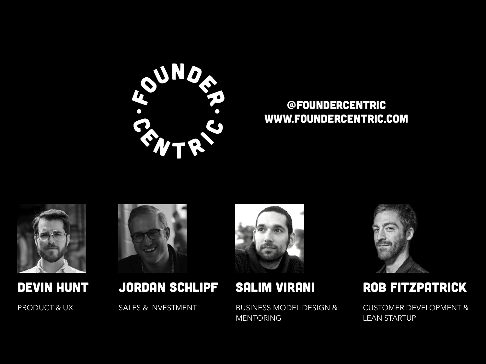
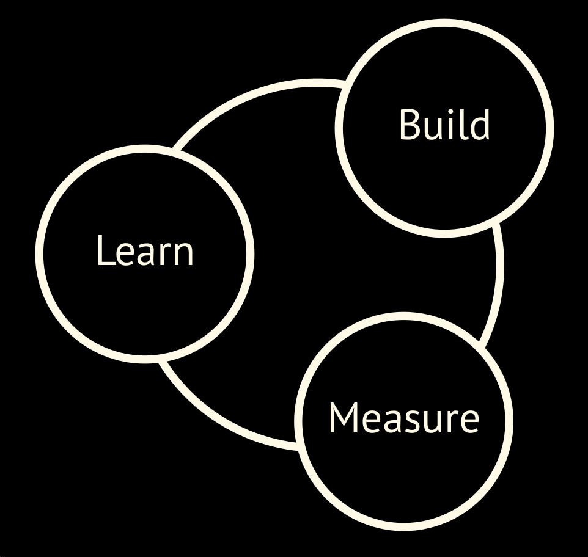
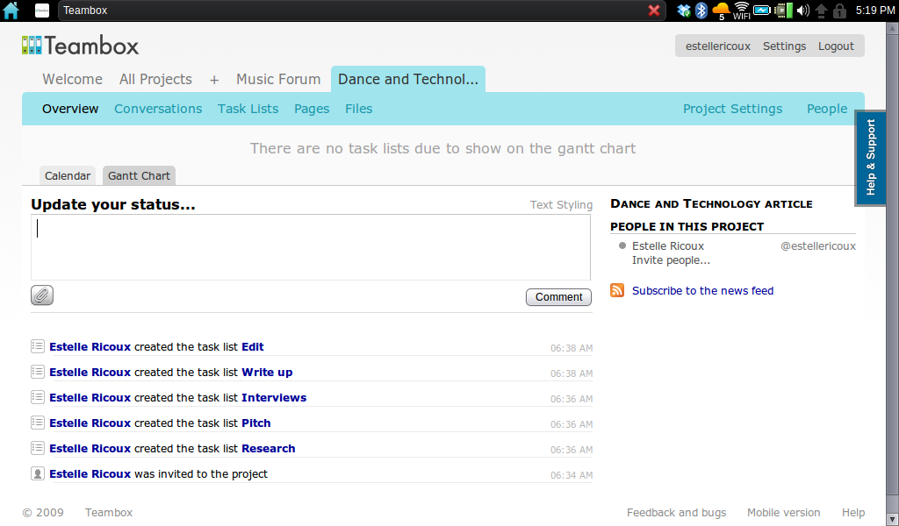
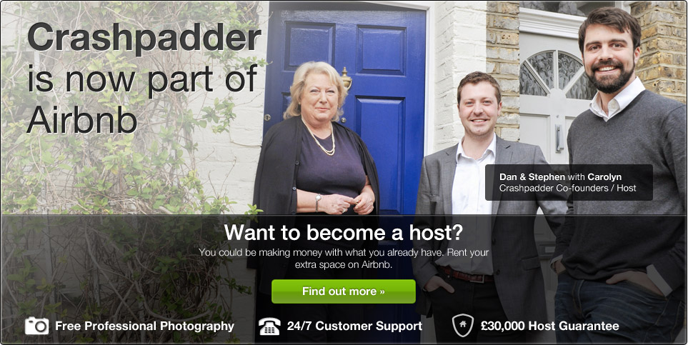
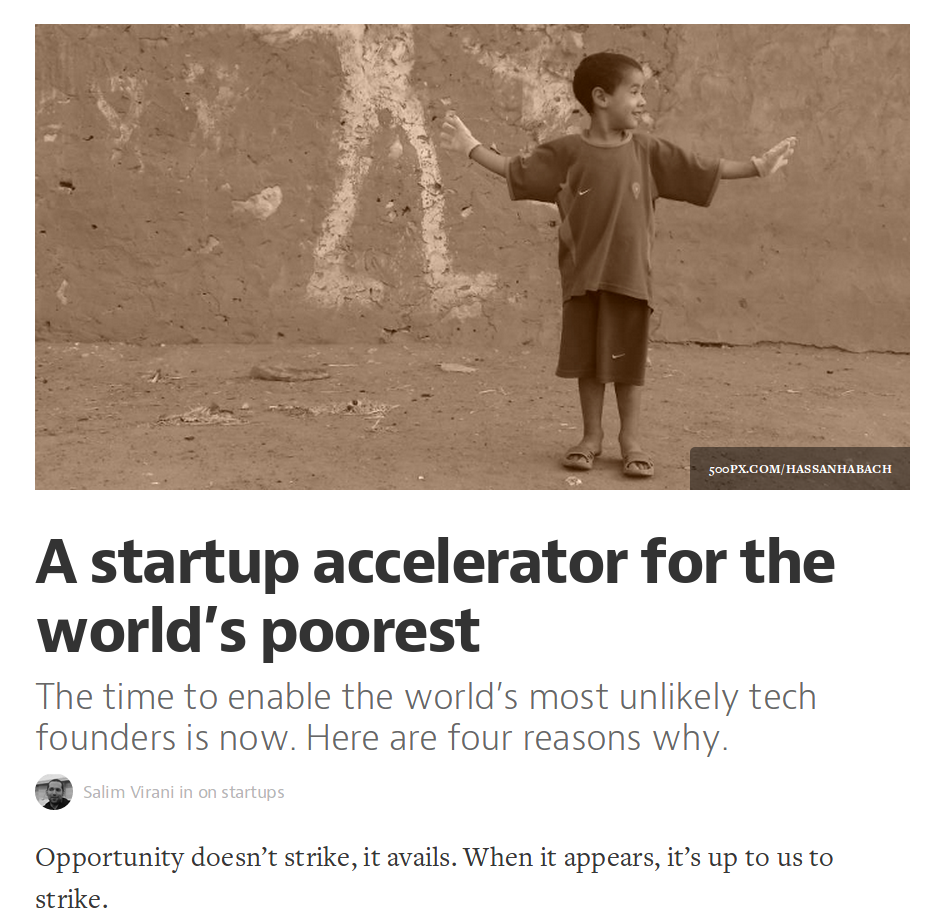
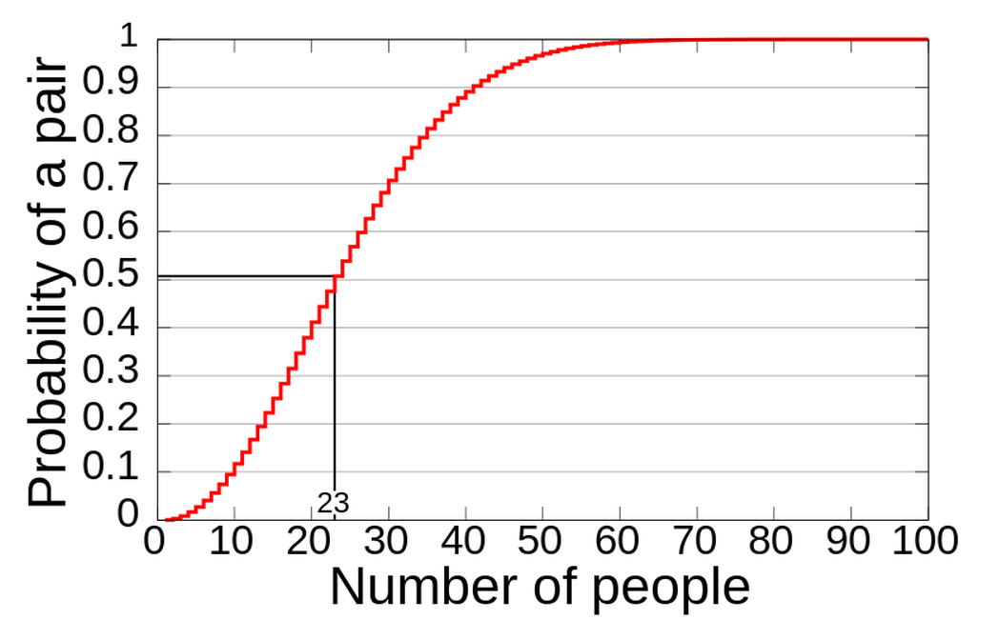
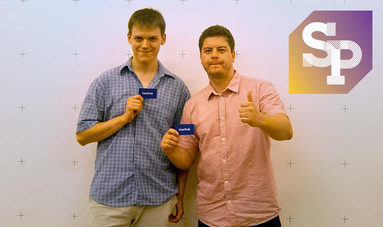
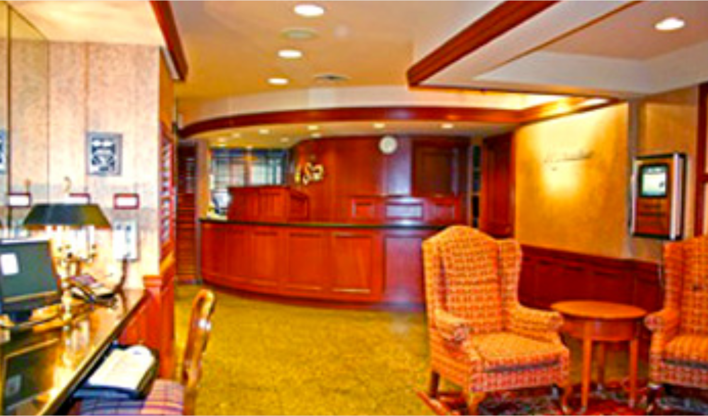
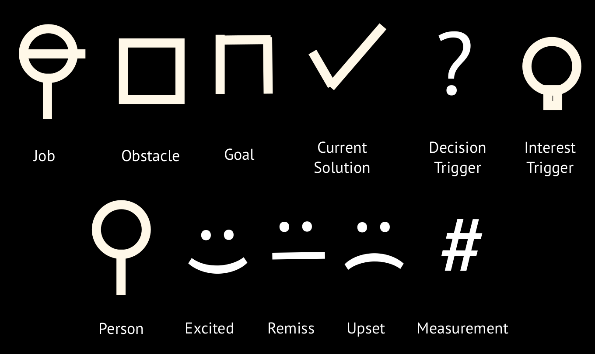
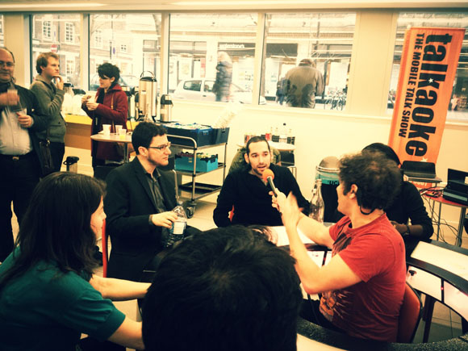

Startup Principles
Don't start until I say go!
Build the tallest freestanding structure.
The marshmallows must be on the very top.
Use as much or as little of the spaghetti, tape and string as you want - nothing else!
You'll have 18 minutes.
"I wish I knew that sooner."
Today
Iterating
Doing Less
Listening
Seeing The Big Picture
Course-Correcting

foundercentric.hackpad.com
Why are
first-time founders
slower?
Our job is to bring ourselves the bad news sooner.

Do less.
What numbers matter?
Growth Engines
Viral
Paid acquisition
Sticky
What are your numbers?
Non-scalable but high-leverage
Deep funnels

Pirate Metrics
Acquisition
Activation
Retention
Referal
Revenue
Go deep. What's your formula?
Beachhead Markets
Evernote
Transferwise
Blossom
Marketplace Liquidity 
How many beachheads can you think of?
Real types of people, not attributes.
You know where to find them.
Specific enough to walk away.
Plant a flag.

Course-Correcting
Product Market Fit
The Birthday Paradox

What's the
fastest way
to get actionable info?

Collect, then inspect
Know your brew time
Biggest Risk
or
Fastest Info?
Listening
Is talking to customers
worth your time?
Is it the fastest way to learn?
Are you course-correcting from it?
Are your decisions based on fact?

Customers' Actual Words
conversion
product decisions
Customer's Actual Behaviour
Pricing
Intros
Positioning

"Your job is to personally email your first 1,000 customers."
Saul Klein
Relationships
Why do I need a network?
When do I start?
You build trust by thinking about relationships, not connections, and about partnerships, not deals.
Vessy Tasheva

"Do your research. It's easier to meet who you need with a list of 100."
Max Gurvits
The Max 100
Customers
Distribution partners
Investors
Analogs (for benchmarks)
Competitors
Antilogs (for red flags)
Domain experts (including press)
Getting in
Alumni
Supply chains
Investors
Engineer a connection.
"The startups that do best are fire-and-forget. All you have to do is give them a lead, and they'll close it, whatever type of lead it is."
Paul Graham
Business Model Proficiency
"When I see a startup with 5 revenue models, I know there are really zero."
Alex Osterwalder
"Success comes from persistently improving and inventing, not from persistently pushing what's not working."
Derek Sivers
Invest in info.
Decide fast.
Be responsive.
Do your job.
"I wish I knew that sooner"
When were you wrong?
So what changes?
salim@foundercentric.com
@saintsal
←
→
/ /
Go to slide: